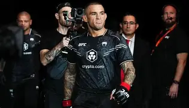
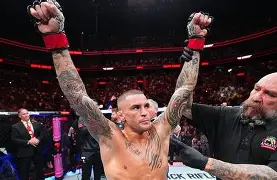
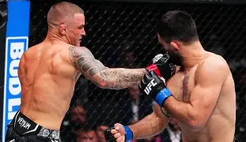

Bienvenido a mi sitio web
Soy Dustin Poirier
Indice
Fotos
Descripcion web
Fuentes
Gustos en comun
Fdo. Dustin Poirier
Dustin Poirier es un peleador estadounidense de artes marciales mixtas (MMA), excampeón interino de peso ligero de la UFC y considerado uno de los mejores luchadores de su generación.
Fotos



Descripcion web
El contenido de esta pagina web es sobre Dustin Poirier, sus logoros, sus derrotas y explicando quien es
Fuentes
Las fuentes son: UFC
Gustos en comun
Dustin poirier y yo tenemos gustos en comun como:
- Deportes de contacto
- Mujeres
- Naturaleza
- Musica rap
- Comida
Biografia
Wikipedia
Ir a la página de Marc Márquez